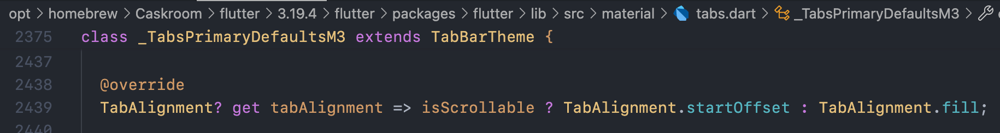
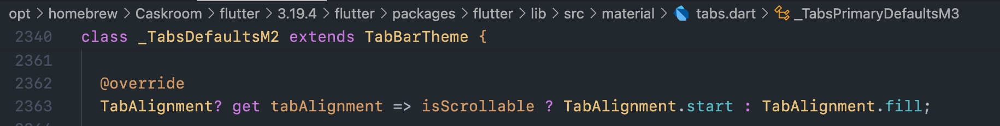
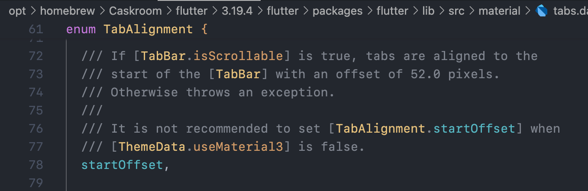

TabBar의 isScrollable을 true로 설정하면 왼쪽에 default padding이 잡힘- Flutter 3.16.0 버전부터 Material 3 디자인이 적용되면서,
isScrollable이 true일 때 tabAlignment 속성의 기본값이 TabAlignment.startOffset이 됨
- Material3 에서
TabBar의 기본 alignment

- Material2 에서
TabBar의 기본 alignment

TabAlignment.startOffset은 왼쪽에 52px offset을 추가하기 때문에 왼쪽에 여백이 생기는 것
- 따라서, 아래 세 가지 방법으로 left offset을 제거할 수 있다.
- Material 3를 사용하지 않도록 설정
TabBar.tabAlignment를 TabAlignment.start로 설정TabBar.padding에 EdgeInsets.only(left: 10)처럼 원하는 offset으로 override
Reference#